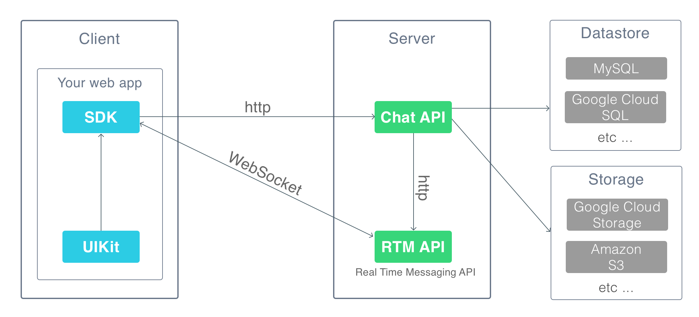

<!DOCTYPE HTML>
<html lang="jp" >
    <head>
        <meta charset="UTF-8">
        <meta content="text/html; charset=utf-8" http-equiv="Content-Type">
        <title>スタートガイド · swagchat SDK</title>
        <meta http-equiv="X-UA-Compatible" content="IE=edge" />
        <meta name="description" content="">
        <meta name="generator" content="GitBook 3.2.3">
        
        
        
    
    <link rel="stylesheet" href="../gitbook/style.css">

    
            
                
                <link rel="stylesheet" href="../gitbook/gitbook-plugin-highlight/website.css">
                
            
                
                <link rel="stylesheet" href="../gitbook/gitbook-plugin-search/search.css">
                
            
                
                <link rel="stylesheet" href="../gitbook/gitbook-plugin-fontsettings/website.css">
                
            
        

    

    
        
        <link rel="stylesheet" href="website.css">
        
    

        
    
    
    <meta name="HandheldFriendly" content="true"/>
    <meta name="viewport" content="width=device-width, initial-scale=1, user-scalable=no">
    <meta name="apple-mobile-web-app-capable" content="yes">
    <meta name="apple-mobile-web-app-status-bar-style" content="black">
    <link rel="apple-touch-icon-precomposed" sizes="152x152" href="../gitbook/images/apple-touch-icon-precomposed-152.png">
    <link rel="shortcut icon" href="../gitbook/images/favicon.ico" type="image/x-icon">

    
    <link rel="next" href="quick-start/" />
    
    
    <link rel="prev" href="./" />
    

    </head>
    <body>
        
<div class="book">
    <div class="book-summary">
        
            
<div id="book-search-input" role="search">
    <input type="text" placeholder="Type to search" />
</div>

            
                <nav role="navigation">
                


<ul class="summary">
    
    

    

    
        
        
    
        <li class="chapter " data-level="1.1" data-path="./">
            
                <a href="./">
            
                    
                    はじめに
            
                </a>
            

            
        </li>
    
        <li class="chapter active" data-level="1.2" data-path="start-guide.html">
            
                <a href="start-guide.html">
            
                    
                    スタートガイド
            
                </a>
            

            
        </li>
    
        <li class="chapter " data-level="1.3" data-path="quick-start/">
            
                <a href="quick-start/">
            
                    
                    クイックスタート
            
                </a>
            

            
            <ul class="articles">
                
    
        <li class="chapter " data-level="1.3.1" data-path="quick-start/local.html">
            
                <a href="quick-start/local.html">
            
                    
                    ローカル環境で起動
            
                </a>
            

            
        </li>
    
        <li class="chapter " data-level="1.3.2" data-path="quick-start/paas.html">
            
                <a href="quick-start/paas.html">
            
                    
                    PaaSで起動
            
                </a>
            

            
        </li>
    

            </ul>
            
        </li>
    
        <li class="chapter " data-level="1.4" data-path="production-deploy.html">
            
                <a href="production-deploy.html">
            
                    
                    プロダクションデプロイ
            
                </a>
            

            
        </li>
    

    
        
        <li class="divider"></li>
        
        
    
        <li class="chapter " data-level="2.1" >
            
                <span>
            
                    
                    Chat API
            
                </span>
            

            
            <ul class="articles">
                
    
        <li class="chapter " data-level="2.1.1" data-path="chat-api/">
            
                <a href="chat-api/">
            
                    
                    概要
            
                </a>
            

            
        </li>
    
        <li class="chapter " data-level="2.1.2" data-path="chat-api/launch.html">
            
                <a href="chat-api/launch.html">
            
                    
                    起動方法
            
                </a>
            

            
        </li>
    
        <li class="chapter " data-level="2.1.3" data-path="chat-api/reference.html">
            
                <a href="chat-api/reference.html">
            
                    
                    リファレンス
            
                </a>
            

            
        </li>
    
        <li class="chapter " data-level="2.1.4" data-path="chat-api/settings.html">
            
                <a href="chat-api/settings.html">
            
                    
                    設定
            
                </a>
            

            
            <ul class="articles">
                
    
        <li class="chapter " data-level="2.1.4.1" data-path="chat-api/settings.html">
            
                <a href="chat-api/settings.html#port">
            
                    
                    port
            
                </a>
            

            
        </li>
    
        <li class="chapter " data-level="2.1.4.2" data-path="chat-api/settings.html">
            
                <a href="chat-api/settings.html#profiling">
            
                    
                    profiling
            
                </a>
            

            
        </li>
    
        <li class="chapter " data-level="2.1.4.3" data-path="chat-api/settings.html">
            
                <a href="chat-api/settings.html#errorlogging">
            
                    
                    errorLogging
            
                </a>
            

            
        </li>
    
        <li class="chapter " data-level="2.1.4.4" data-path="chat-api/settings.html">
            
                <a href="chat-api/settings.html#logginglevel">
            
                    
                    logging.level
            
                </a>
            

            
        </li>
    
        <li class="chapter " data-level="2.1.4.5" >
            
                <span>
            
                    
                    storage
            
                </span>
            

            
            <ul class="articles">
                
    
        <li class="chapter " data-level="2.1.4.5.1" data-path="chat-api/settings.html">
            
                <a href="chat-api/settings.html#storageprovider">
            
                    
                    provider
            
                </a>
            

            
        </li>
    
        <li class="chapter " data-level="2.1.4.5.2" data-path="chat-api/settings.html">
            
                <a href="chat-api/settings.html#storagebaseUrl">
            
                    
                    baseUrl
            
                </a>
            

            
        </li>
    
        <li class="chapter " data-level="2.1.4.5.3" data-path="chat-api/settings.html">
            
                <a href="chat-api/settings.html#storagelocalpath">
            
                    
                    localPath
            
                </a>
            

            
        </li>
    
        <li class="chapter " data-level="2.1.4.5.4" data-path="chat-api/settings.html">
            
                <a href="chat-api/settings.html#storageuploadbucket">
            
                    
                    uploadBucket
            
                </a>
            

            
        </li>
    
        <li class="chapter " data-level="2.1.4.5.5" data-path="chat-api/settings.html">
            
                <a href="chat-api/settings.html#storageuploaddirectory">
            
                    
                    uploadDirectory
            
                </a>
            

            
        </li>
    
        <li class="chapter " data-level="2.1.4.5.6" data-path="chat-api/settings.html">
            
                <a href="chat-api/settings.html#storagethumbnailbucket">
            
                    
                    thumbnailBucket
            
                </a>
            

            
        </li>
    
        <li class="chapter " data-level="2.1.4.5.7" data-path="chat-api/settings.html">
            
                <a href="chat-api/settings.html#storagethumbnaildirectory">
            
                    
                    thumbnailDirectory
            
                </a>
            

            
        </li>
    
        <li class="chapter " data-level="2.1.4.5.8" data-path="chat-api/settings.html">
            
                <a href="chat-api/settings.html#storagegcpprojectid">
            
                    
                    gcpProjectId
            
                </a>
            

            
        </li>
    
        <li class="chapter " data-level="2.1.4.5.9" data-path="chat-api/settings.html">
            
                <a href="chat-api/settings.html#storagegcpjwtpath">
            
                    
                    gcpJwtPath
            
                </a>
            

            
        </li>
    
        <li class="chapter " data-level="2.1.4.5.10" data-path="chat-api/settings.html">
            
                <a href="chat-api/settings.html#storageawsregion">
            
                    
                    awsRegion
            
                </a>
            

            
        </li>
    
        <li class="chapter " data-level="2.1.4.5.11" data-path="chat-api/settings.html">
            
                <a href="chat-api/settings.html#storageawsaccesskeyid">
            
                    
                    awsAccessKeyId
            
                </a>
            

            
        </li>
    
        <li class="chapter " data-level="2.1.4.5.12" data-path="chat-api/settings.html">
            
                <a href="chat-api/settings.html#storageawssecretaccesskey">
            
                    
                    awsSecretAccessKey
            
                </a>
            

            
        </li>
    

            </ul>
            
        </li>
    

            </ul>
            
        </li>
    

            </ul>
            
        </li>
    

    
        
        <li class="divider"></li>
        
        
    
        <li class="chapter " data-level="3.1" >
            
                <span>
            
                    
                    RTM API
            
                </span>
            

            
            <ul class="articles">
                
    
        <li class="chapter " data-level="3.1.1" data-path="rtm-api/">
            
                <a href="rtm-api/">
            
                    
                    概要
            
                </a>
            

            
        </li>
    
        <li class="chapter " data-level="3.1.2" data-path="rtm-api/launch.html">
            
                <a href="rtm-api/launch.html">
            
                    
                    起動方法
            
                </a>
            

            
        </li>
    

            </ul>
            
        </li>
    

    
        
        <li class="divider"></li>
        
        
    
        <li class="chapter " data-level="4.1" >
            
                <span>
            
                    
                    SDK
            
                </span>
            

            
            <ul class="articles">
                
    
        <li class="chapter " data-level="4.1.1" data-path="sdk/">
            
                <a href="sdk/">
            
                    
                    概要
            
                </a>
            

            
        </li>
    
        <li class="chapter " data-level="4.1.2" data-path="sdk/install.html">
            
                <a href="sdk/install.html">
            
                    
                    インストール
            
                </a>
            

            
        </li>
    

            </ul>
            
        </li>
    

    
        
        <li class="divider"></li>
        
        
    
        <li class="chapter " data-level="5.1" >
            
                <span>
            
                    
                    UIKit
            
                </span>
            

            
            <ul class="articles">
                
    
        <li class="chapter " data-level="5.1.1" data-path="uikit/">
            
                <a href="uikit/">
            
                    
                    概要
            
                </a>
            

            
        </li>
    
        <li class="chapter " data-level="5.1.2" data-path="uikit/browser/">
            
                <a href="uikit/browser/">
            
                    
                    タグを設置して動かす
            
                </a>
            

            
            <ul class="articles">
                
    
        <li class="chapter " data-level="5.1.2.1" data-path="uikit/browser/chat-apps/messenger.html">
            
                <a href="uikit/browser/chat-apps/messenger.html">
            
                    
                    メッセンジャー
            
                </a>
            

            
        </li>
    
        <li class="chapter " data-level="5.1.2.2" data-path="uikit/browser/chat-apps/simple-messenger.html">
            
                <a href="uikit/browser/chat-apps/simple-messenger.html">
            
                    
                    シンプルメッセンジャー
            
                </a>
            

            
        </li>
    

            </ul>
            
        </li>
    
        <li class="chapter " data-level="5.1.3" data-path="uikit/nodejs/">
            
                <a href="uikit/nodejs/">
            
                    
                    チャットアプリケーションを組み込む
            
                </a>
            

            
            <ul class="articles">
                
    
        <li class="chapter " data-level="5.1.3.1" data-path="uikit/nodejs/install.html">
            
                <a href="uikit/nodejs/install.html">
            
                    
                    インストール
            
                </a>
            

            
        </li>
    
        <li class="chapter " data-level="5.1.3.2" data-path="uikit/nodejs/reference/">
            
                <a href="uikit/nodejs/reference/">
            
                    
                    リファレンス
            
                </a>
            

            
            <ul class="articles">
                
    
        <li class="chapter " data-level="5.1.3.2.1" data-path="uikit/nodejs/reference/ApplicationComponent/">
            
                <a href="uikit/nodejs/reference/ApplicationComponent/">
            
                    
                    アプリケーションコンポーネント
            
                </a>
            

            
            <ul class="articles">
                
    
        <li class="chapter " data-level="5.1.3.2.1.1" data-path="uikit/nodejs/reference/ApplicationComponent/Messenger.html">
            
                <a href="uikit/nodejs/reference/ApplicationComponent/Messenger.html">
            
                    
                    Messenger
            
                </a>
            

            
        </li>
    
        <li class="chapter " data-level="5.1.3.2.1.2" data-path="uikit/nodejs/reference/ApplicationComponent/SimpleMessenger.html">
            
                <a href="uikit/nodejs/reference/ApplicationComponent/SimpleMessenger.html">
            
                    
                    SimpleMessenger
            
                </a>
            

            
        </li>
    

            </ul>
            
        </li>
    
        <li class="chapter " data-level="5.1.3.2.2" data-path="uikit/nodejs/reference/ContainerComponent/">
            
                <a href="uikit/nodejs/reference/ContainerComponent/">
            
                    
                    コンテナーコンポーネント
            
                </a>
            

            
            <ul class="articles">
                
    
        <li class="chapter " data-level="5.1.3.2.2.1" data-path="uikit/nodejs/reference/ContainerComponent/MessagePage.html">
            
                <a href="uikit/nodejs/reference/ContainerComponent/MessagePage.html">
            
                    
                    MessagePage
            
                </a>
            

            
        </li>
    
        <li class="chapter " data-level="5.1.3.2.2.2" data-path="uikit/nodejs/reference/ContainerComponent/RoomListPage.html">
            
                <a href="uikit/nodejs/reference/ContainerComponent/RoomListPage.html">
            
                    
                    RoomListPage
            
                </a>
            

            
        </li>
    
        <li class="chapter " data-level="5.1.3.2.2.3" data-path="uikit/nodejs/reference/ContainerComponent/RoomSettingPage.html">
            
                <a href="uikit/nodejs/reference/ContainerComponent/RoomSettingPage.html">
            
                    
                    RoomSettingPage
            
                </a>
            

            
        </li>
    
        <li class="chapter " data-level="5.1.3.2.2.4" data-path="uikit/nodejs/reference/ContainerComponent/SelectContactPage.html">
            
                <a href="uikit/nodejs/reference/ContainerComponent/SelectContactPage.html">
            
                    
                    SelectContactPage
            
                </a>
            

            
        </li>
    

            </ul>
            
        </li>
    
        <li class="chapter " data-level="5.1.3.2.3" data-path="uikit/nodejs/reference/PresentationComponent/">
            
                <a href="uikit/nodejs/reference/PresentationComponent/">
            
                    
                    プレゼンテーションコンポーネント
            
                </a>
            

            
            <ul class="articles">
                
    
        <li class="chapter " data-level="5.1.3.2.3.1" data-path="uikit/nodejs/reference/PresentationComponent/Avatar.html">
            
                <a href="uikit/nodejs/reference/PresentationComponent/Avatar.html">
            
                    
                    Avatar
            
                </a>
            

            
        </li>
    
        <li class="chapter " data-level="5.1.3.2.3.2" data-path="uikit/nodejs/reference/PresentationComponent/Badge.html">
            
                <a href="uikit/nodejs/reference/PresentationComponent/Badge.html">
            
                    
                    Badge
            
                </a>
            

            
        </li>
    
        <li class="chapter " data-level="5.1.3.2.3.3" data-path="uikit/nodejs/reference/PresentationComponent/Button.html">
            
                <a href="uikit/nodejs/reference/PresentationComponent/Button.html">
            
                    
                    Button
            
                </a>
            

            
        </li>
    
        <li class="chapter " data-level="5.1.3.2.3.4" data-path="uikit/nodejs/reference/PresentationComponent/ContactList.html">
            
                <a href="uikit/nodejs/reference/PresentationComponent/ContactList.html">
            
                    
                    ContactList
            
                </a>
            

            
        </li>
    
        <li class="chapter " data-level="5.1.3.2.3.5" data-path="uikit/nodejs/reference/PresentationComponent/MessageBody.html">
            
                <a href="uikit/nodejs/reference/PresentationComponent/MessageBody.html">
            
                    
                    MessageBody
            
                </a>
            

            
        </li>
    
        <li class="chapter " data-level="5.1.3.2.3.6" data-path="uikit/nodejs/reference/PresentationComponent/Modal.html">
            
                <a href="uikit/nodejs/reference/PresentationComponent/Modal.html">
            
                    
                    Modal
            
                </a>
            

            
        </li>
    
        <li class="chapter " data-level="5.1.3.2.3.7" data-path="uikit/nodejs/reference/PresentationComponent/ModalAction.html">
            
                <a href="uikit/nodejs/reference/PresentationComponent/ModalAction.html">
            
                    
                    ModalAction
            
                </a>
            

            
        </li>
    
        <li class="chapter " data-level="5.1.3.2.3.8" data-path="uikit/nodejs/reference/PresentationComponent/PhotoEdit.html">
            
                <a href="uikit/nodejs/reference/PresentationComponent/PhotoEdit.html">
            
                    
                    PhotoEdit
            
                </a>
            

            
        </li>
    
        <li class="chapter " data-level="5.1.3.2.3.9" data-path="uikit/nodejs/reference/PresentationComponent/RoomList.html">
            
                <a href="uikit/nodejs/reference/PresentationComponent/RoomList.html">
            
                    
                    RoomList
            
                </a>
            

            
        </li>
    
        <li class="chapter " data-level="5.1.3.2.3.10" data-path="uikit/nodejs/reference/PresentationComponent/RoomSettingButtons.html">
            
                <a href="uikit/nodejs/reference/PresentationComponent/RoomSettingButtons.html">
            
                    
                    RoomSettingButtons
            
                </a>
            

            
        </li>
    
        <li class="chapter " data-level="5.1.3.2.3.11" data-path="uikit/nodejs/reference/PresentationComponent/SubTitleBar.html">
            
                <a href="uikit/nodejs/reference/PresentationComponent/SubTitleBar.html">
            
                    
                    SubTitleBar
            
                </a>
            

            
        </li>
    
        <li class="chapter " data-level="5.1.3.2.3.12" data-path="uikit/nodejs/reference/PresentationComponent/TextAvatar.html">
            
                <a href="uikit/nodejs/reference/PresentationComponent/TextAvatar.html">
            
                    
                    TextAvatar
            
                </a>
            

            
        </li>
    
        <li class="chapter " data-level="5.1.3.2.3.13" data-path="uikit/nodejs/reference/PresentationComponent/TopBar.html">
            
                <a href="uikit/nodejs/reference/PresentationComponent/TopBar.html">
            
                    
                    TopBar
            
                </a>
            

            
        </li>
    

            </ul>
            
        </li>
    
        <li class="chapter " data-level="5.1.3.2.4" data-path="uikit/nodejs/reference/AddonMessage/">
            
                <a href="uikit/nodejs/reference/AddonMessage/">
            
                    
                    メッセージアドオン
            
                </a>
            

            
            <ul class="articles">
                
    
        <li class="chapter " data-level="5.1.3.2.4.1" data-path="uikit/nodejs/reference/AddonMessage/Text.html">
            
                <a href="uikit/nodejs/reference/AddonMessage/Text.html">
            
                    
                    Text
            
                </a>
            

            
        </li>
    
        <li class="chapter " data-level="5.1.3.2.4.2" data-path="uikit/nodejs/reference/AddonMessage/Image.html">
            
                <a href="uikit/nodejs/reference/AddonMessage/Image.html">
            
                    
                    Image
            
                </a>
            

            
        </li>
    

            </ul>
            
        </li>
    

            </ul>
            
        </li>
    

            </ul>
            
        </li>
    
        <li class="chapter " data-level="5.1.4" data-path="uikit/contributors/">
            
                <a href="uikit/contributors/">
            
                    
                    コントリビュータ向け
            
                </a>
            

            
            <ul class="articles">
                
    
        <li class="chapter " data-level="5.1.4.1" data-path="uikit/contributors/build-system.html">
            
                <a href="uikit/contributors/build-system.html">
            
                    
                    ビルドシステム
            
                </a>
            

            
        </li>
    
        <li class="chapter " data-level="5.1.4.2" data-path="uikit/contributors/application-architecture.html">
            
                <a href="uikit/contributors/application-architecture.html">
            
                    
                    アプリケーションアーキテクチャ
            
                </a>
            

            
        </li>
    

            </ul>
            
        </li>
    

            </ul>
            
        </li>
    

    

    <li class="divider"></li>

    <li>
        <a href="https://www.gitbook.com" target="blank" class="gitbook-link">
            Published with GitBook
        </a>
    </li>
</ul>


                </nav>
            
        
    </div>

    <div class="book-body">
        
            <div class="body-inner">
                
                    

<div class="book-header" role="navigation">
    

    <!-- Title -->
    <h1>
        <i class="fa fa-circle-o-notch fa-spin"></i>
        <a href="." >スタートガイド</a>
    </h1>
</div>


                    <div class="page-wrapper" tabindex="-1" role="main">
                        <div class="page-inner">
                            
<div id="book-search-results">
    <div class="search-noresults">
    
                                <section class="normal markdown-section">
                                
                                <h1 id="&#x30B9;&#x30BF;&#x30FC;&#x30C8;&#x30AC;&#x30A4;&#x30C9;">&#x30B9;&#x30BF;&#x30FC;&#x30C8;&#x30AC;&#x30A4;&#x30C9;</h1>
<p>swagchat&#x306F;&#x30B5;&#x30FC;&#x30D0;&#x30A2;&#x30D7;&#x30EA;&#x30B1;&#x30FC;&#x30B7;&#x30E7;&#x30F3;&#x3068;&#x306A;&#x308B;,<a href="#chat-api">Chat API</a>&#x3001;<a href="#rtm-api-real-time-messaging-api">RTM API (Real Time Messaging API)</a> &#x3068;&#x3001;&#x30AF;&#x30E9;&#x30A4;&#x30A2;&#x30F3;&#x30C8;&#x30A2;&#x30D7;&#x30EA;&#x30B1;&#x30FC;&#x30B7;&#x30E7;&#x30F3;&#x5B9F;&#x88C5;&#x306E;&#x70BA;&#x306E;&#x30AD;&#x30C3;&#x30C8;&#x3068;&#x306A;&#x308B; <a href="#sdk">SDK</a>&#x3001;<a href="#uikit">UIKit</a> &#x306E;4&#x3064;&#x3067;&#x69CB;&#x6210;&#x3055;&#x308C;&#x3066;&#x3044;&#x307E;&#x3059;&#x3002;</p>
<p></p>
<p>&#x30B5;&#x30FC;&#x30D0;&#x5074;&#x306E;2&#x3064;&#x306E;API&#x306F;&#x30A2;&#x30D7;&#x30EA;&#x30B1;&#x30FC;&#x30B7;&#x30E7;&#x30F3;&#x81EA;&#x8EAB;&#x304C;TCP&#x30DD;&#x30FC;&#x30C8;&#x3092;&#x30EA;&#x30C3;&#x30B9;&#x30F3;&#x3059;&#x308B;&#x70BA;&#x3001;&#x5225;&#x9014;Apache&#x3084;nginx&#x306E;&#x3088;&#x3046;&#x306A;Web&#x30B5;&#x30FC;&#x30D0;&#x3092;&#x8D77;&#x52D5;&#x3055;&#x305B;&#x308B;&#x5FC5;&#x8981;&#x304C;&#x3042;&#x308A;&#x307E;&#x305B;&#x3093;&#x3002;&#x5B9F;&#x884C;&#x3059;&#x308C;&#x3070;&#x5373;&#x5EA7;&#x306B;&#x5229;&#x7528;&#x3067;&#x304D;&#x307E;&#x3059;&#x3002;TCP&#x30DD;&#x30FC;&#x30C8;&#x756A;&#x53F7;&#x306F;&#x81EA;&#x7531;&#x306B;&#x8A2D;&#x5B9A;&#x3067;&#x304D;&#x307E;&#x3059;&#x3002;
&#x672C;&#x683C;&#x7684;&#x306B;&#x5229;&#x7528;&#x3059;&#x308B;&#x5834;&#x5408;&#x306F;RDB&#x3084;&#x30E1;&#x30C3;&#x30BB;&#x30FC;&#x30B8;&#x30AD;&#x30E5;&#x30FC;&#x3001;API&#x30B2;&#x30FC;&#x30C8;&#x30A6;&#x30A7;&#x30A4;&#x3001;&#x30ED;&#x30B0;&#x53CE;&#x96C6;&#x3092;&#x884C;&#x3046;&#x70BA;&#x306E;&#x30DF;&#x30C9;&#x30EB;&#x30A6;&#x30A7;&#x30A2;&#x304C;&#x5FC5;&#x8981;&#x306B;&#x306A;&#x308A;&#x307E;&#x3059;&#x3002;&#x3053;&#x308C;&#x3089;&#x3092;&#x5229;&#x7528;&#x3059;&#x308B;&#x70BA;&#x306E;&#x30B7;&#x30B9;&#x30C6;&#x30E0;&#x30A2;&#x30FC;&#x30AD;&#x30C6;&#x30AF;&#x30C1;&#x30E3;&#x306B;&#x3064;&#x3044;&#x3066;&#x306F;<a href="architecture.md">&#x3053;&#x3061;&#x3089;</a>&#x3092;&#x53C2;&#x7167;&#x3057;&#x3066;&#x4E0B;&#x3055;&#x3044;&#x3002;
&#x30AF;&#x30E9;&#x30A4;&#x30A2;&#x30F3;&#x30C8;&#x30AD;&#x30C3;&#x30C8;&#x306E;2&#x3064;&#x306B;&#x3064;&#x3044;&#x3066;&#x306F;API&#x901A;&#x4FE1;&#x3092;&#x884C;&#x3046;&#x4E0A;&#x3067;&#x3068;&#x3066;&#x3082;&#x5229;&#x4FBF;&#x6027;&#x306E;&#x826F;&#x3044;&#x3082;&#x306E;&#x3067;&#x3059;&#x3002;&#x5FC5;&#x305A;&#x5229;&#x7528;&#x3057;&#x306A;&#x3051;&#x308C;&#x3070;&#x3044;&#x3051;&#x306A;&#x3044;&#x308F;&#x3051;&#x3067;&#x306F;&#x3042;&#x308A;&#x307E;&#x305B;&#x3093;&#x304C;&#x3001;&#x5229;&#x7528;&#x3059;&#x308B;&#x4E8B;&#x3067;&#x5B9F;&#x88C5;&#x304C;&#x5BB9;&#x6613;&#x306B;&#x306A;&#x308A;&#x307E;&#x3059;&#x306E;&#x3067;&#x662F;&#x975E;&#x3054;&#x5229;&#x7528;&#x4E0B;&#x3055;&#x3044;&#x3002;
&#x4EE5;&#x4E0B;&#x306B;&#x305D;&#x308C;&#x305E;&#x308C;&#x306E;&#x6982;&#x8981;&#x3092;&#x8AAC;&#x660E;&#x3057;&#x307E;&#x3059;&#x3002;&#x3068;&#x306B;&#x304B;&#x304F;&#x307E;&#x305A;&#x306F;&#x52D5;&#x304B;&#x3057;&#x3066;&#x307F;&#x305F;&#x3044;&#x3068;&#x3044;&#x3046;&#x65B9;&#x306F;<a href="quick-start/">&#x30AF;&#x30A4;&#x30C3;&#x30AF;&#x30B9;&#x30BF;&#x30FC;&#x30C8;</a>&#x3092;&#x3054;&#x53C2;&#x7167;&#x4E0B;&#x3055;&#x3044;&#x3002;</p>
<h2 id="chat-api">Chat API</h2>
<p>&#x30E6;&#x30FC;&#x30B6;&#x7BA1;&#x7406;&#x3084;&#x30EB;&#x30FC;&#x30E0;&#x7BA1;&#x7406;&#x3001;&#x30E1;&#x30C3;&#x30BB;&#x30FC;&#x30B8;&#x9001;&#x53D7;&#x4FE1;&#x7B49;&#x306E;&#x30C1;&#x30E3;&#x30C3;&#x30C8;&#x30A2;&#x30D7;&#x30EA;&#x30B1;&#x30FC;&#x30B7;&#x30E7;&#x30F3;&#x3092;&#x5B9F;&#x73FE;&#x3059;&#x308B;&#x306E;&#x306B;&#x5FC5;&#x8981;&#x306A;&#x6A5F;&#x80FD;&#x3092;REST API&#x3068;&#x3057;&#x3066;&#x63D0;&#x4F9B;&#x3057;&#x3066;&#x3044;&#x307E;&#x3059;&#x3002;&#x307E;&#x305F;&#x3001;&#x30C7;&#x30FC;&#x30BF;&#x306E;&#x6C38;&#x7D9A;&#x5316;&#x306B;RDB&#xFF08;&#x52D5;&#x4F5C;&#x78BA;&#x8A8D;&#x6E08;DB&#xFF1A;SQLite&#x3001;MySQL&#x3001;Google Cloud SQL&#xFF09;&#x3092;&#x5229;&#x7528;&#x3057;&#x307E;&#x3059;&#x3002;
&#x3053;&#x306E;API&#x306F;&#x30BB;&#x30C3;&#x30B7;&#x30E7;&#x30F3;&#x3092;&#x3082;&#x305F;&#x306A;&#x3044;&#x30B9;&#x30C6;&#x30FC;&#x30C8;&#x30EC;&#x30B9;&#x306A;API&#x3067;&#x3042;&#x308B;&#x70BA;&#x3001;&#x6C34;&#x5E73;&#x30B9;&#x30B1;&#x30FC;&#x30EB;&#x304C;&#x53EF;&#x80FD;&#x3067;&#x3059;&#x3002;&#x30AD;&#x30E3;&#x30D1;&#x30B7;&#x30C6;&#x30A3;&#x306F;&#x5229;&#x7528;&#x3059;&#x308B;RDB&#x306B;&#x4F9D;&#x5B58;&#x3057;&#x307E;&#x3059;&#x3002;
Chat API&#x306B;&#x3064;&#x3044;&#x3066;&#x306F;<a href="chat-api/">&#x3053;&#x3061;&#x3089;</a>&#x3092;&#x3054;&#x53C2;&#x7167;&#x4E0B;&#x3055;&#x3044;&#x3002;</p>
<h2 id="rtm-api-real-time-messaging-api">RTM API (Real Time Messaging API)</h2>
<p>Chat API&#x3060;&#x3051;&#x3067;&#x3082;&#x30C1;&#x30E3;&#x30C3;&#x30C8;&#x6A5F;&#x80FD;&#x3068;&#x3057;&#x3066;&#x306F;&#x6210;&#x308A;&#x7ACB;&#x3061;&#x307E;&#x3059;&#x304C;&#x3001;&#x30E6;&#x30FC;&#x30B6;&#x306E;&#x30A8;&#x30F3;&#x30B2;&#x30FC;&#x30B8;&#x30E1;&#x30F3;&#x30C8;&#x3092;&#x9AD8;&#x3081;&#x308B;&#x70BA;&#x306B;&#x306F;&#x30EA;&#x30A2;&#x30EB;&#x30BF;&#x30A4;&#x30E0;&#x6027;&#x304C;&#x91CD;&#x8981;&#x3068;&#x306A;&#x308A;&#x307E;&#x3059;&#x3002;RTM API&#x306F;WebSocket&#x901A;&#x4FE1;&#x3092;&#x5229;&#x7528;&#x3057;&#x3066;&#x30B5;&#x30FC;&#x30D0;&#x304B;&#x3089;&#x30AF;&#x30E9;&#x30A4;&#x30A2;&#x30F3;&#x30C8;&#x3078;Push&#x914D;&#x4FE1;&#x3092;&#x884C;&#x3046;&#x4E8B;&#x3067;&#x30EA;&#x30A2;&#x30EB;&#x30BF;&#x30A4;&#x30E0;&#x6027;&#x3092;&#x5B9F;&#x73FE;&#x3057;&#x307E;&#x3059;&#x3002;
&#x30E1;&#x30C3;&#x30BB;&#x30FC;&#x30B8;&#x30F3;&#x30B0;&#x30E2;&#x30C7;&#x30EB;&#x306F;Pub/Sub&#x30E2;&#x30C7;&#x30EB;&#x3068;&#x306A;&#x308A;&#x307E;&#x3059;&#x3002;&#x5177;&#x4F53;&#x7684;&#x306B;&#x306F;&#x30AF;&#x30E9;&#x30A4;&#x30A2;&#x30F3;&#x30C8;&#x5074;&#x304B;&#x3089;&#x30D1;&#x30D6;&#x30EA;&#x30C3;&#x30B7;&#x30E5;&#x3057;&#x3066;&#x6B32;&#x3057;&#x3044;&#x30C8;&#x30D4;&#x30C3;&#x30AF;&#x3068;&#x306A;&#x308B;&#x30A4;&#x30D9;&#x30F3;&#x30C8;&#x3092;&#x30B5;&#x30D6;&#x30B9;&#x30AF;&#x30E9;&#x30A4;&#x30D6;&#x8981;&#x6C42;&#x3057;&#x3001;Chat API&#x304B;&#x3089;&#x306E;&#x30EA;&#x30AF;&#x30A8;&#x30B9;&#x30C8;&#x306B;&#x3088;&#x308A;&#x30B5;&#x30D6;&#x30B9;&#x30AF;&#x30E9;&#x30A4;&#x30D0;&#x30FC;&#x306B;&#x30D1;&#x30D6;&#x30EA;&#x30C3;&#x30B7;&#x30E5;&#x3055;&#x308C;&#x307E;&#x3059;&#x3002;
&#x306A;&#x304A;&#x5168;&#x3066;&#x306E;&#x30C7;&#x30FC;&#x30BF;&#x306F;&#x30AA;&#x30F3;&#x30E1;&#x30E2;&#x30EA;&#x306E;&#x70BA;&#x6C38;&#x7D9A;&#x5316;&#x306F;&#x3055;&#x308C;&#x307E;&#x305B;&#x3093;&#x3002;
&#x3053;&#x306E;API&#x306F;WebSocket&#x901A;&#x4FE1;&#x3092;&#x884C;&#x3046;&#x306E;&#x3067;Web&#x30AF;&#x30E9;&#x30A4;&#x30A2;&#x30F3;&#x30C8;&#xFF08;&#x4E00;&#x822C;&#x7684;&#x306B;&#x306F;&#x30D6;&#x30E9;&#x30A6;&#x30B6;&#x3068;&#x306A;&#x308B;&#x3067;&#x3057;&#x3087;&#x3046;&#xFF09;&#x3068;TCP&#x30B3;&#x30CD;&#x30AF;&#x30B7;&#x30E7;&#x30F3;&#x3092;&#x5F35;&#x308A;&#x7D9A;&#x3051;&#x307E;&#x3059;&#x3002;&#x3064;&#x307E;&#x308A;Web&#x30AF;&#x30E9;&#x30A4;&#x30A2;&#x30F3;&#x30C8;&#x3068;API&#x304C;&#x7A3C;&#x50CD;&#x3057;&#x3066;&#x3044;&#x308B;&#x30DB;&#x30B9;&#x30C8;&#x304C;&#x76F4;&#x63A5;1&#x5BFE;1&#x3067;&#x63A5;&#x7D9A;&#x3055;&#x308C;&#x308B;&#x4E8B;&#x306B;&#x306A;&#x308A;&#x307E;&#x3059;&#x3002;&#x3088;&#x3063;&#x3066;&#x3053;&#x306E;API&#x3092;&#x30B9;&#x30B1;&#x30FC;&#x30EB;&#x3059;&#x308B;&#x70BA;&#x306B;&#x306F;&#x30D0;&#x30C3;&#x30AF;&#x30A8;&#x30F3;&#x30C9;&#x306B;Pub/Sub&#x30E2;&#x30C7;&#x30EB;&#x306E;&#x30E1;&#x30C3;&#x30BB;&#x30FC;&#x30B8;&#x30AD;&#x30E5;&#x30FC;&#x304C;&#x5FC5;&#x8981;&#x3068;&#x306A;&#x308A;&#x307E;&#x3059;&#x3002;&#x73FE;&#x72B6;&#x306F;&#x3053;&#x306E;&#x30E1;&#x30C3;&#x30BB;&#x30FC;&#x30B8;&#x30AD;&#x30E5;&#x30FC;&#x306B;<a href="http://nsq.io/" target="_blank">NSQ</a>&#x3092;&#x63A1;&#x7528;&#x3057;&#x3066;&#x3044;&#x307E;&#x3059;&#x3002;
RTM API&#x306B;&#x3064;&#x3044;&#x3066;&#x306F;<a href="rtm-api/">&#x3053;&#x3061;&#x3089;</a>&#x3092;&#x3054;&#x53C2;&#x7167;&#x4E0B;&#x3055;&#x3044;&#x3002;</p>
<h2 id="sdk">SDK</h2>
<p>Chat API&#x3001;RTM API&#x3092;&#x5229;&#x7528;&#x3059;&#x308B;&#x70BA;&#x306E;&#x30BD;&#x30D5;&#x30C8;&#x30A6;&#x30A7;&#x30A2;&#x958B;&#x767A;&#x30AD;&#x30C3;&#x30C8;&#x3067;&#x3059;&#x3002;&#x3069;&#x3061;&#x3089;&#x306E;API&#x3082;HTTP&#x30D7;&#x30ED;&#x30C8;&#x30B3;&#x30EB;&#x306B;&#x3088;&#x308B;WEB API&#x306E;&#x70BA;&#x3001;SDK&#x3092;&#x5229;&#x7528;&#x3057;&#x306A;&#x304F;&#x3066;&#x3082;&#x5229;&#x7528;&#x3067;&#x304D;&#x307E;&#x3059;&#x304C;SDK&#x3092;&#x5229;&#x7528;&#x3059;&#x308B;&#x4E8B;&#x3067;&#x30B3;&#x30FC;&#x30C9;&#x304C;&#x30B7;&#x30F3;&#x30D7;&#x30EB;&#x306B;&#x306A;&#x308A;&#x3001;&#x30A8;&#x30E9;&#x30FC;&#x30CF;&#x30F3;&#x30C9;&#x30EA;&#x30F3;&#x30B0;&#x3082;&#x5BB9;&#x6613;&#x306B;&#x306A;&#x308A;&#x307E;&#x3059;&#x3002;
&#x305F;&#x3060;&#x3057;&#x73FE;&#x72B6;&#x306F;JavaScript(TypeScript)&#x306E;&#x307F;&#x306E;&#x63D0;&#x4F9B;&#x3067;&#x3042;&#x308B;&#x70BA;&#x3001;&#x305D;&#x306E;&#x4ED6;&#x306E;&#x8A00;&#x8A9E;&#x306F;&#x76F4;&#x63A5;HTTP&#x901A;&#x4FE1;&#x3092;&#x884C;&#x3063;&#x3066;&#x9802;&#x304F;&#x4E8B;&#x306B;&#x306A;&#x308A;&#x307E;&#x3059;&#x3002;
SDK&#x306B;&#x3064;&#x3044;&#x3066;&#x306F;<a href="sdk/">&#x3053;&#x3061;&#x3089;</a>&#x3092;&#x3054;&#x53C2;&#x7167;&#x4E0B;&#x3055;&#x3044;&#x3002;</p>
<h2 id="uikit">UIKit</h2>
<p>&#x672C;UIKit&#x306F;Swagchat&#x3092;&#x5229;&#x7528;&#x3057;&#x305F;&#x30C1;&#x30E3;&#x30C3;&#x30C8;&#x30A2;&#x30D7;&#x30EA;&#x30B1;&#x30FC;&#x30B7;&#x30E7;&#x30F3;&#x3092;&#x69CB;&#x7BC9;&#x3059;&#x308B;&#x969B;&#x306B;&#x5FC5;&#x8981;&#x306A;UI&#x3092;&#x7C21;&#x5358;&#x306B;&#x63CF;&#x753B;&#x3067;&#x304D;&#x308B;&#x30AD;&#x30C3;&#x30C8;&#x3067;&#x3059;&#x3002;
UIKit&#x5185;&#x90E8;&#x3067;&#x306F;Swagchat&#x306E;SDK&#x3092;&#x5229;&#x7528;&#x3057;&#x3066;API&#x901A;&#x4FE1;&#x3092;&#x884C;&#x3046;&#x51E6;&#x7406;&#x304C;&#x7D44;&#x307F;&#x8FBC;&#x307E;&#x308C;&#x3066;&#x3044;&#x308B;&#x70BA;&#x3001;Chat API&#x30B5;&#x30FC;&#x30D0;&#x3068;&#x306E;&#x63A5;&#x7D9A;&#x304C;&#x3067;&#x304D;&#x3066;&#x3044;&#x308C;&#x3070;&#x8A2D;&#x7F6E;&#x3059;&#x308B;&#x305F;&#x3051;&#x3067;&#x30C7;&#x30FC;&#x30BF;&#x304C;&#x8868;&#x793A;&#x3055;&#x308C;&#x307E;&#x3059;&#x3002;
UI&#x306B;&#x72EC;&#x81EA;&#x6027;&#x3092;&#x6253;&#x3061;&#x51FA;&#x3059;&#x5FC5;&#x8981;&#x304C;&#x3042;&#x308B;&#x306E;&#x3067;&#x3042;&#x308C;&#x3070;&#x3053;&#x306E;UIKit&#x3092;&#x5229;&#x7528;&#x305B;&#x305A;&#x306B;&#x72EC;&#x81EA;&#x3067;&#x5B9F;&#x88C5;&#x3057;&#x3066;&#x9802;&#x3044;&#x305F;&#x65B9;&#x304C;&#x826F;&#x3044;&#x3067;&#x3057;&#x3087;&#x3046;&#x3002;</p>
<p>React&#x30B3;&#x30F3;&#x30DD;&#x30FC;&#x30CD;&#x30F3;&#x30C8;&#x3068;&#x3057;&#x3066;&#x63D0;&#x4F9B;&#x3057;&#x3066;&#x3044;&#x308B;&#x70BA;&#x3001;iOS&#x3001;Android&#x7B49;&#x306E;&#x30CD;&#x30A4;&#x30C6;&#x30A3;&#x30D6;&#x30A2;&#x30D7;&#x30EA;&#x30D7;&#x30E9;&#x30C3;&#x30C8;&#x30D5;&#x30A9;&#x30FC;&#x30E0;&#x306F;&#x72EC;&#x81EA;&#x3067;&#x5B9F;&#x88C5;&#x3057;&#x3066;&#x9802;&#x304F;&#x5FC5;&#x8981;&#x304C;&#x3042;&#x308A;&#x307E;&#x3059;&#x3002;&#xFF08;&#x30CD;&#x30A4;&#x30C6;&#x30A3;&#x30D6;&#x30A2;&#x30D7;&#x30EA;&#x306E;&#x30A6;&#x30A7;&#x30D6;&#x30D3;&#x30E5;&#x30FC;&#x3092;&#x5229;&#x7528;&#x3059;&#x308B;&#x306E;&#x3067;&#x3042;&#x308C;&#x3070;&#x305D;&#x306E;&#x307E;&#x307E;&#x5229;&#x7528;&#x53EF;&#x80FD;&#x3067;&#x3059;&#xFF09;</p>
<p>UIKit&#x306B;&#x3064;&#x3044;&#x3066;&#x306F;<a href="uikit/">&#x3053;&#x3061;&#x3089;</a>&#x3092;&#x3054;&#x53C2;&#x7167;&#x4E0B;&#x3055;&#x3044;&#x3002;</p>

                                
                                </section>
                            
    </div>
    <div class="search-results">
        <div class="has-results">
            
            <h1 class="search-results-title"><span class='search-results-count'></span> results matching "<span class='search-query'></span>"</h1>
            <ul class="search-results-list"></ul>
            
        </div>
        <div class="no-results">
            
            <h1 class="search-results-title">No results matching "<span class='search-query'></span>"</h1>
            
        </div>
    </div>
</div>

                        </div>
                    </div>
                
            </div>

            
                
                <a href="./" class="navigation navigation-prev " aria-label="Previous page: はじめに">
                    <i class="fa fa-angle-left"></i>
                </a>
                
                
                <a href="quick-start/" class="navigation navigation-next " aria-label="Next page: クイックスタート">
                    <i class="fa fa-angle-right"></i>
                </a>
                
            
        
    </div>

    <script>
        var gitbook = gitbook || [];
        gitbook.push(function() {
            gitbook.page.hasChanged({"page":{"title":"スタートガイド","level":"1.2","depth":1,"next":{"title":"クイックスタート","level":"1.3","depth":1,"path":"quick-start/README.md","ref":"quick-start/README.md","articles":[{"title":"ローカル環境で起動","level":"1.3.1","depth":2,"path":"quick-start/local.md","ref":"quick-start/local.md","articles":[]},{"title":"PaaSで起動","level":"1.3.2","depth":2,"path":"quick-start/paas.md","ref":"quick-start/paas.md","articles":[]}]},"previous":{"title":"はじめに","level":"1.1","depth":1,"path":"README.md","ref":"README.md","articles":[]},"dir":"ltr"},"config":{"plugins":[],"styles":{"website":"website.css"},"pluginsConfig":{"highlight":{},"search":{},"lunr":{"maxIndexSize":1000000,"ignoreSpecialCharacters":false},"sharing":{"facebook":true,"twitter":true,"google":false,"weibo":false,"instapaper":false,"vk":false,"all":["facebook","google","twitter","weibo","instapaper"]},"fontsettings":{"theme":"white","family":"sans","size":2},"theme-default":{"styles":{"website":"styles/website.css","pdf":"styles/pdf.css","epub":"styles/epub.css","mobi":"styles/mobi.css","ebook":"styles/ebook.css","print":"styles/print.css"},"showLevel":false}},"theme":"default","pdf":{"pageNumbers":true,"fontSize":12,"fontFamily":"Arial","paperSize":"a4","chapterMark":"pagebreak","pageBreaksBefore":"/","margin":{"right":62,"left":62,"top":56,"bottom":56}},"structure":{"langs":"LANGS.md","readme":"README.md","glossary":"GLOSSARY.md","summary":"SUMMARY.md"},"variables":{},"title":"swagchat SDK","language":"jp","gitbook":"*"},"file":{"path":"start-guide.md","mtime":"2017-09-20T05:50:24.000Z","type":"markdown"},"gitbook":{"version":"3.2.3","time":"2017-09-20T16:58:48.911Z"},"basePath":".","book":{"language":"jp"}});
        });
    </script>
</div>

        
    <script src="../gitbook/gitbook.js"></script>
    <script src="../gitbook/theme.js"></script>
    
        
        <script src="../gitbook/gitbook-plugin-search/search-engine.js"></script>
        
    
        
        <script src="../gitbook/gitbook-plugin-search/search.js"></script>
        
    
        
        <script src="../gitbook/gitbook-plugin-lunr/lunr.min.js"></script>
        
    
        
        <script src="../gitbook/gitbook-plugin-lunr/search-lunr.js"></script>
        
    
        
        <script src="../gitbook/gitbook-plugin-sharing/buttons.js"></script>
        
    
        
        <script src="../gitbook/gitbook-plugin-fontsettings/fontsettings.js"></script>
        
    

    </body>
</html>

